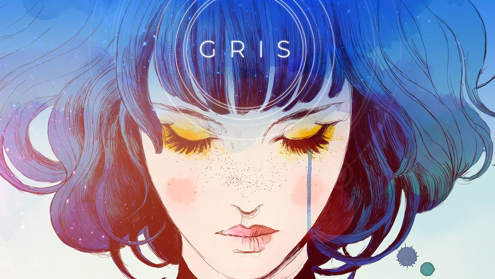
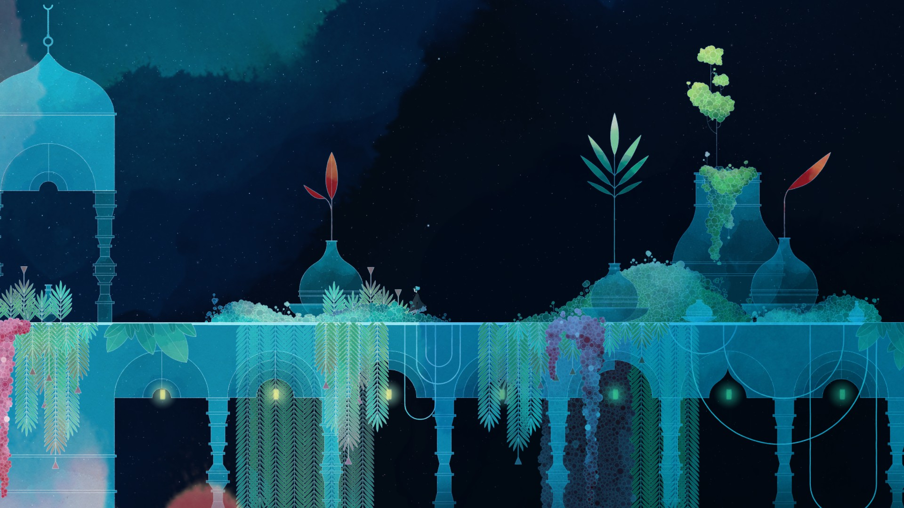
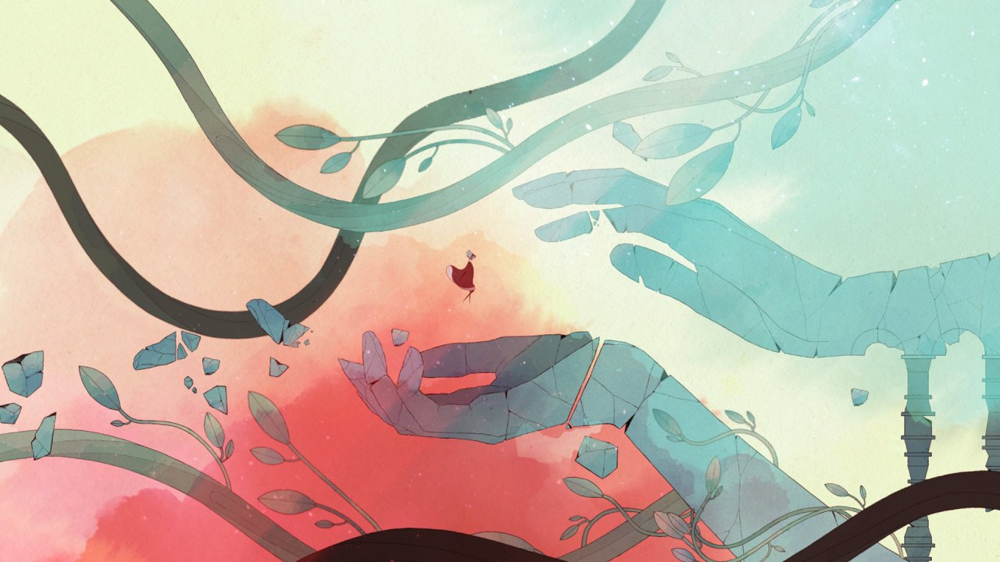
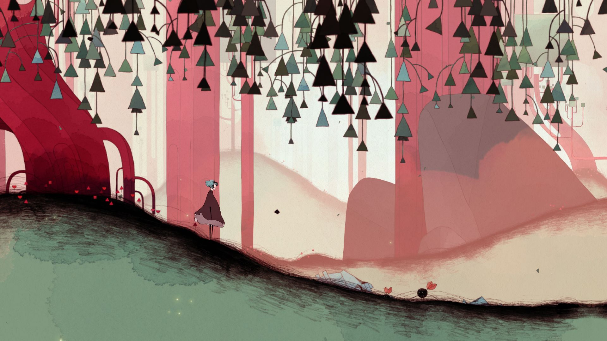

Gris is a game that dives into the processing of grief, and how the main character moves throughout the world Synopsis Visual Aesthetics



Music
Your browser does not support the audio element.
Your browser does not support the audio element.
Your browser does not support the audio element.
Trailer
References